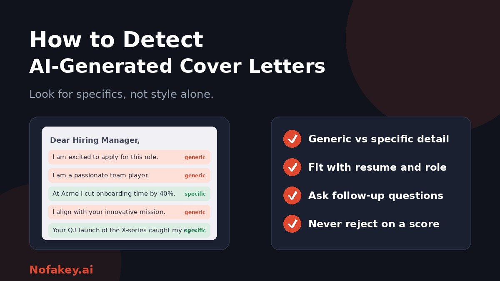

A recruiter opens a stack of cover letters and notices they all sound alike: warm, balanced, enthusiastic and oddly empty. Many were probably written with AI, and some were not. Telling the difference is harder than it looks, and a wrong call can cost a good candidate their chance. This guide covers the signs worth looking for, why detectors are only a clue, and what to do next, for both hiring teams and applicants.
First, ask what you are really trying to find out
"Was this written by AI?" is often the wrong question. What hiring teams usually care about is:
- Is it true? Do the claims match the candidate's real experience?
- Is it personal? Does it show real interest in this role and company?
- Can they communicate? Can the candidate express the same ideas in their own words when it matters?
A letter polished with AI that is accurate and specific may be fine. A hand-typed letter full of vague filler may not be. Define your standard before you screen, and say it in the job posting.
Signs a cover letter may be AI-generated
None of these proves anything on its own. Together, and combined with a follow-up, they can tell you where to look.
| Sign | What it looks like | Why it can mislead |
|---|---|---|
| Generic claims | "Passionate team player" and "proven track record" with no example | Many human letters are generic too, especially from nervous applicants |
| Little role or company detail | Could be sent to any employer by changing the name | Candidates applying to many jobs often reuse templates |
| Repeated points | The same claim restated in different words across paragraphs | Padding to reach a length is common in human writing |
| Even, flawless tone | Calm, balanced, positive throughout, with no personality | Careful writers and non-native speakers can write this way |
| Resume mismatch | Skills or achievements that do not appear on the resume, or the reverse | Could be a mistake, not deception |
| Outdated or wrong facts | Wrong company details, a mistaken job title or a product you do not make | A strong signal of copy-paste, but human errors happen too |
| Stock phrases | Stacks of buzzwords about "innovation" and "alignment" with your mission | Cover-letter guides taught these phrases long before AI |
Example (made up)
Generic: "I am a highly motivated professional with a passion for innovation. My skills align perfectly with your mission."
Specific: "At my last job I rewrote our onboarding emails after noticing new customers dropped off in week two. I'd like to bring that habit of reading the data first to your support team."
The second tells you something checkable and personal. That is what to look for, whoever wrote it.
What about AI detectors?
Detectors scan for patterns and return a probability. Some vendors describe cover letters as easier to analyse than resumes because they contain full paragraphs, and that can be true in a limited sense. But a score is still only a clue:
- It can flag honest candidates, particularly careful or non-native English writers.
- It can miss AI text that was edited or rewritten.
- It says nothing about whether the letter is accurate or whether the candidate is right for the job.
- Different tools can disagree on the same letter.
Read are AI detectors accurate? for the details. If you use a detector, treat it as a reason to look closer, not a reason to reject.
A fair way to check, step by step
- Read for substance. Highlight claims you could verify. Are there real examples, numbers, projects or names?
- Compare with the resume and application. Check that dates, roles and skills line up.
- Check role fit. Does the letter show that the candidate understands this job, not just any job?
- Note concerns without concluding. Write what you noticed, not "this is AI."
- Advance on job-related merit. If the candidate otherwise looks strong, move them forward and test skills.
- Use a short follow-up. This is the most reliable check, as described below.
- Document your reasoning in job-related terms.
Follow-up questions that reveal real understanding
- "You mentioned [specific claim]. Can you walk me through what you did and what happened?"
- "What was the hardest part of that project, and what would you do differently?"
- "Why this company and this role, in your own words?"
- "Tell me about a time you disagreed with a colleague. What did you do?"
- "If you were starting here on Monday, what would you look at first?"
A candidate who used AI to help draft but understands and owns the content will answer comfortably. A candidate who cannot discuss claims in their own letter has a different problem: the claims may not be theirs or may not be true. A short live exercise can add more. See AI detection tools for HR teams for a fuller hiring workflow, including identity checks for remote hires.
Set a clear policy so you are not guessing
- Say what is acceptable. For example: "You may use AI to help edit your application, but content must be accurate and about your own experience."
- Be consistent across candidates and roles.
- Allow accommodations and assistive tools, and make it easy to ask.
- Ask for disclosure only if it matters, and explain why. Wording ideas are in how to label AI-generated content.
- Protect candidate data. Check what any third-party tool stores before uploading applications, and follow your privacy and employment rules.
Rules on automated tools in hiring differ by country and are changing, so ask qualified employment counsel before adding detection to your process. This is general information, not legal advice.
If you are the applicant
Using AI to help with a cover letter is common. The trick is to keep it truthful and personal.
- Start with your own notes: three real examples, why this company and what you can do for them.
- Use AI for structure and editing, not to invent your story.
- Add specifics only you know: a project, a result, a detail from the company's work.
- Check every claim. Remove anything untrue or exaggerated.
- Cut stock phrases and buzzwords that could apply to anyone.
- Read it aloud. If it does not sound like you, rewrite it.
- Be ready to discuss everything you wrote in an interview.
- Follow the employer's rules on AI use and disclosure if they state any.
- Do not rely on "humanizer" tools. Rewriting to dodge a detector does not fix generic content and can make it worse.
If you are flagged unfairly, stay calm, offer to talk about your experience, and share notes or drafts if you have them. Our guide on AI detector accuracy explains why scores can be wrong.
Checking many letters at once
High-volume teams may want automated screening. Test any tool on letters you know the origin of before relying on it, and keep humans in the loop. See bulk AI content checker for agencies for a calibration process that works for hiring volumes too.
Conclusion
You cannot prove a cover letter was AI-written from the text alone, but you can tell whether it is specific, accurate and personal, and you can find out whether the candidate can talk about it. Look for substance, compare with the resume, use detectors only as a clue, and verify through a short conversation. Applicants should use AI as a helper, keep the details real, and be ready to discuss them. If a job message or offer looks suspicious, paste it into our free checker for a quick first read, and find more guides on the Nofakey.ai blog.
Frequently asked questions
How can you tell if a cover letter was written by AI?
Look for generic claims with no concrete examples, little specific detail about the company or role, repeated points in different words, and a mismatch with the resume. None of these is proof, so verify in a conversation.
Are AI detectors accurate on cover letters?
They are probabilistic and can be wrong in both directions. Cover letters have more prose than resumes, but a score is still only a clue and should not decide an application.
Should recruiters reject AI-written cover letters?
Not automatically. Many candidates use AI for editing or structure. Focus on whether the content is accurate and personal, and test real skills later in the process.
What follow-up questions reveal whether a candidate wrote their application?
Ask the candidate to expand on a specific claim, describe a challenge in their own words, explain why they chose this company, or walk through an example they mentioned.
How can applicants use AI without sounding generic?
Use AI for structure and editing, add your own specific examples and reasons for applying, check every claim is true, and read the final letter aloud to make sure it sounds like you.
Got a suspicious job message or offer to check?
Run it through the checker